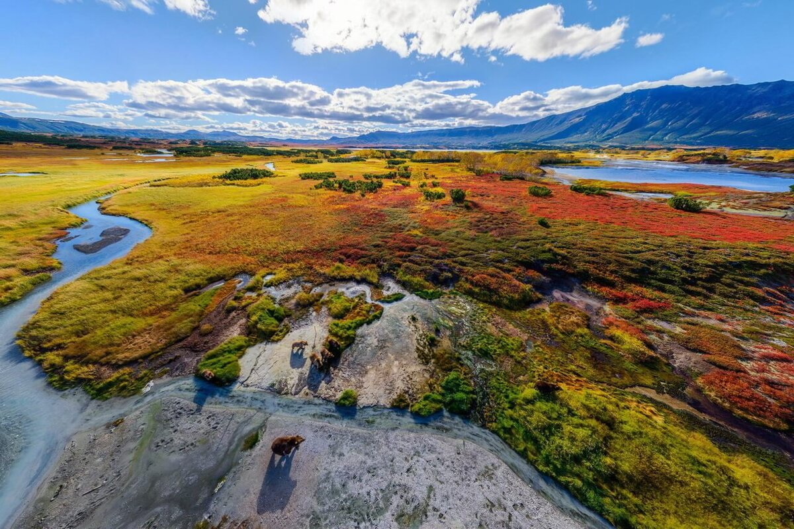

Кроноцкое озеро
Одно из достопримечательностей Кроноцкого заповедника — это одноименное озеро, являющееся крупнейшим пресным водоемом полуострова.
Фото
Долина Гейзеров
В 2008 году Долина гейзеров на Камчатке была признана одним из семи чудес России.Такое звание получено заслужено, ведь экосистема этого места уникальна для нашей страны.
Фото

Кроноцкий биосферный заповедник
Кроноцкий биосферный заповедник занимает территорию в 1 147 619 га, где каждый гектар—это очередное доказательство великолепия камчатской природы.
Фото